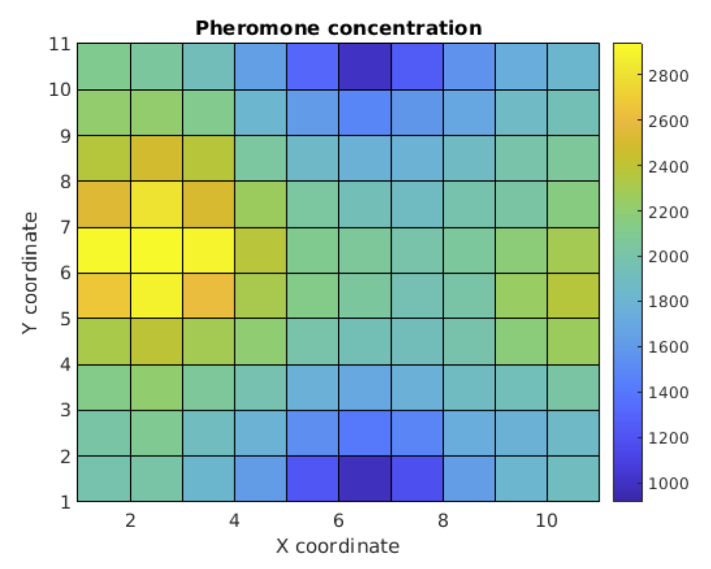

Ant Path Finding Simulation
During APPL 101: Exploring Engineering, I worked with a team of 2 other students to create a simulation that modeled something from nature. We decided to create a simple model of how ants use pheromones to find food and over time, find a shorter and shorter path from the colony to the food source. Within my team, my teammates primarily conducted the research on ant pathfinding behavior and I developed and wrote all the code for the simulation.
I used Matlab to create this simulation utilizing 2D arrays where the each element corresponded to a point that an ant could be in. Using this method meant that the ants were limited to moving in the four cardinal directions. This simulation starts off with 2 parts. The first step of the simulation is to generate a number of "random walks". In these random walks, an ant will incrementally take steps without knowing where the food source is. At each step, they will randomly decide to move up, down, left, or right. This continues until the ant reaches the food source. As the ant is doing this "random walk", it is laying down pheromones which is simulated by an integer in the 2D array. Each time an ant moves into a square, the pheromone count for that square is incremented. As you conduct more and more of these random walks, a pheromone map appears as you can see on the image to the left. The area of high concentration shows the food source while the area with low concentration shows the ants home or colony. The second step takes the pheromone map and minds a path from high pheromone concentration to low pheromone concentration which creates the shortest path that you can see in the image on the right.
-


Ant Pathfinding Simulation Features
Features include:
- Matlab simulation
- 2D array
- Variable "random walks" to show how increased sample sizes improves route length
At first, tackling something as complex as ant behavior seemed a very daunting task. However, I found that once we broke it down and made some simplifying assumptions it became much easier to create a model for. Although this model for ant pathfinding behavior is by no means perfect, it shows how you can easily create something that models the natural world pretty well. Even as a simple model, there are so many potential applications for this type of program ranging from the Traveling Salesman problem to identifying the shortest route between two points on a map.